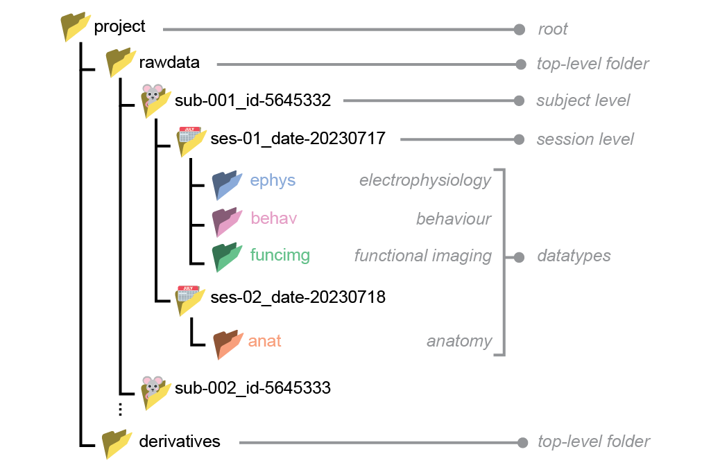

The specification#
The current version of NeuroBlueprint mainly aims to enforce a uniform and consistent project folder structure. In addition, it also includes some non-mandatory conventions for naming files and storing tabular metadata.
Note
We mark requirements with italicised keywords that should be interpreted as described by the Network Working Group. In decreasing order of requirement, these are: must , should , and may .
Project folder structure#
Standardised project folders contain data that are hierarchically structured according to the BIDS standard.
For example:

Basic principles#
The project folder may have any name descriptive of the project, but it must be without spaces.
Within the project folder, data must be separated into
rawdataandderivatives.rawdata: coming out of the data acquisition system (e.g. binary files, tiffs, videos files).derivatives: any processed data that is derived fromrawdata(e.g. spike sorting or pose estimation).
Data within the
rawdatafolder must be hierarchically structured into subject/session/datatype levels. Each level must contain at least one folder corresponding to the next (lower) level.Subject and session folder names must consist of key-value pairs separated by underscores, without spaces e.g.
sub-001_id-5645332.Datatype folder names must be one of the following :
ephys,behav,funcimg,anat.Datatype folders must be placed under the session level.
Below we describe each level of the rawdata folder hierarchy in more detail. Though we impose no absolute requirements for the folder structure within derivatives, it should match the hierarchy in rawdata whenever possible.
Subject#
Each subject must have exactly one subject-level folder.
Subject-level folders must be prefixed with a key-value pair that is unique for each subject. The key must be
suband the value must be numerical, e.g.sub-001.Subjects should be assigned ascending numerical labels as they are added to the project. The labels should be prefixed with an arbitrary number of 0s for consistent indentation and sorting, e.g.
sub-001,sub-002,sub-003.Additional key-value pairs with alphanumerical labels may be appended after the
subkey-value pair. For example, animal IDs (e.g. from the animal facility) can be added as follows:sub-001_id-5645332. The keys should be consistent across subjects.
Hint
valid:
sub-02,sub-001_id-5645332_sex-F,sub-02_species-mouseinvalid:
mouse-01: the first key should have beensub.sub-001_female:femaleshould have been written as a key-value pair (e.g.sex-female)sub-B: thesubkey should have a numerical value
Session#
Each session must have exactly one session-level folder.
Session-level folders must be prefixed with a key-value pair that is unique for each session. The key must be
sesand the value must be numerical, e.g.ses-01.Sessions should be assigned ascending numerical labels as they are added to the project. The labels should be prefixed with an arbitrary number of 0s for consistent indentation and sorting, e.g.
ses-01,ses-02,ses-03.Additional key-value pairs with alphanumerical labels may be appended after the
seskey-value pair. For example, dates can be added as follows:ses-001_date-20230310. The keys should be consistent across subjects.If a
datefield is added, it should be in the formatYYYYMMDD.If a
timefield is added, it should be in the formatHHMMSSIf a
datetimefield is added, it should be in ISO8601 formatYYYYMMDDTHHMMSSe.g.20231225T133015.Different sessions may contain different combinations of datatypes.
Hint
valid:
ses-02,ses-2_date-20230204invalid:
date-20230204_ses-01:sesshould have been the first keysession2: should have been written asses-2ses-A: theseskey should have a numerical value
Datatype#
The datatype folder, placed in the session level folder, is where data are stored. Two sets of datatype folder names are supported, either ‘Broad’ or ‘Narrow’. The Broad datatype names are designed to cover most use cases:
ephys: electrophysiology (e.g. Neuropixel probes, tetrodes)behav: behavioural (e.g. video and audio files, response logs)funcimg: functional imaging (e.g. calcium and voltage imaging)anat: anatomical (e.g. histology, using confocal or lightsheet)
In some cases, the Broad datatype names may not be specific enough,
for example if two different types of electrophysiological (ephys)
recording were run. In this case, the Broad datatype
name must be substituted for a Narrow datatype name (rather than placing two
different datatypes in a Broad datatype folder). See the dropdown below for
the full list of supported Narrow datatypes.
Narrow datatypes
If a Narrow datatype is used instead of a Broad datatype anywhere in the project, the Narrow datatype must be used across the entire project. The Broad datatype for that category must no longer be used.
If you have a modality that does not fit into the current datatype options, please get in contact!
ephys
ecephys: extracellular electrophysiologyicephys: intracellular electrophysiology
funcimg
cscope: head-mounted widefield macroscopef2pe: functional 2-photon excitation imagingfmri: functional magnetic resonance imagingfusi: functional ultra-sound imaging
anat
These are taken from BIDS microscopy
(with the exception of mri).
2pe: 2-photon excitation microscopybf: bright-field microscopycars: coherent anti-Stokes Raman spectroscopyconf: confocal microscopydic: differential interference contrast microscopydf: dark-field microscopyfluo: fluorescence microscopympe: multi-photon excitation microscopynlo: nonlinear optical microscopyoct: optical coherence tomographypc: phase-contrast microscopypli: polarized-light microscopysem: scanning electron microscopyspim: selective plane illumination microscopysr: super-resolution microscopytem: transmission electron microscopyuct: micro-CTmri: magnetic resonance imaging
Example
In this example experiment, both functional
magnetic resonance imaging (fmri) and
functional two-photon imaging (f2pe) were run
across two difference sessions. Then, anatomical
imaging was performed at the end (here stored in a
single session) using both brightfield (bf) and
two-photon imaging (2pe).
Optional key-value pairs in the filename are used to again indicate the datatype, but this is not required.
.
└── sub-001/
├── ses-001/
│ └── fmri/
│ └── sub-001_ses-001_dtype-fmri.nii
├── ses-002/
│ └── f2pe/
│ └── sub-001_ses-002_dtype-f2pe.mat
└── ses-005_type-histology/
├── bf/
│ └── sub-001_ses-003_dtype-bf.tif
└── 2pe/
└── sub-001_ses-003_dtype-2pe.tif
Example project folder#
A real project folder might look like:
└── project/
├── rawdata/
│ └── sub-001_id-5645332/
│ ├── ses-01_date-20230310/
│ │ ├── ephys/
│ │ │ ├── sub-001_ses-01_recording-01.bin
│ │ │ └── sub-001_ses-01_probe-3A.imec0
│ │ └── behav/
│ │ ├── sub-001_ses-01_camera-01.wav
│ │ └── sub-001_ses-01_data-responses.csv
│ └── ses-02_date-20230311/
│ └── anat/
│ └── sub-001_image-brain.tiff
└── derivatives/
└── sub-001_id-5645332/
├── ses-01_date-20230310/
│ ├── ephys/
│ │ └── sub-001_ses-01_data-spikes.npy
│ └── behav/
│ └── sub-001_ses-01_data-poses.csv
└── ses-02_date-20230311/
└── anat/
└── sub-001_data-cellcounts.csv
File naming conventions#
NeuroBlueprint imposes no absolute requirements on file names. That said, below we provide some recommendations for file names, based on the BIDS specification.
What makes a good file name?
be nice to humans -> readable and descriptive
be nice to computers -> parseable and consistent
use alphanumeric characters
Aa-Zz, 0-9, dashes-, underscores_avoid spaces and special characters
use appropriate extensions for each file type (e.g.
.csv,.avi,.tiff)don’t rely on capitalization to distinguish files (some operating systems are case-insensitive)
File names should be formatted as series of key-value pairs ending with a file extension:
<key1>-<value1>_<key2>-<value2>_<key3>-<value3>...<keyN>-<valueN>.<extension>
Key-value pairs should be separated by underscores while the keys and values are separated by hyphens (e.g.
sub-001_ses-001_key1-value1_key2-value2.csv).Anything after the left-most stop (
.) is considered as the file extension.subandsesshould be included in the filename. This can seem redundant, given that the file is already in asub-<label>/ses-<label>folder, but it makes it easier to identify the file if it is moved out of its original folder.Additional information, such as the task name, or run number, may be included as further key-value pairs, e.g.
sub-001_ses-001_task-escape_run-001.csvIf the acquisition software outputs data with its own mandatory file naming convention, these should be placed under a folder that follows the NeuroBlueprint naming conventions, e.g.:
└── my_project/
└── rawdata/
└── sub-001/
└── ses-001/
└── behav/
└── sub-001_ses-001_task-discrimination_software-cooltool/
├── required-software-output-name-3453234.mp4
└── required-software-output-name-3453235.mp4
Example file names#
Below we provide some example file names adhering to the NeuroBlueprint naming conventions.
└── project/
└── rawdata/
└── sub-001/
└── ses-01/
├── ephys/
│ ├── sub-01_ses-01_probe-3A.imec0
│ ├── sub-01_ses-01_task-retinotopy.lf.bin
│ ├── sub-01_ses-01_task-discrim_monitor-right_run-01.ap.bin
│ ├── sub-01_ses-01_task-discrim_monitor-left_run-01.ap.bin
│ └── sub-01_ses-01_task-discrim_monitor-left_run-02.ap.bin
└── behav/
├── sub-01_ses-01_task-discrim_monitor-right_run-01.mp4
├── sub-01_ses-01_task-discrim_monitor-left_run-01.mp4
└── sub-01_ses-01_task-discrim_monitor-right_run-02.mp4
Metadata conventions#
NeuroBlueprint imposes no absolute requirements on how to store metadata. That said, we do outline some best practices, in accordance with the BIDS specification on tabular files.
Tabular metadata#
Tabular metadata, e.g. a table describing the animals in the project, should be saved as a tab-separated value file (TSV, ending with .tsv) , that is, a CSV file where commas are replaced by tabs. The tab character is a less ambiguous delimiter compared to commas, as it is less likely to appear in data. This makes TSV less prone to parsing errors.
If you are using TSV files, we recommend adhering to the following conventions:
The first row of the file should contain descriptive column names, formatted as snake_case (e.g.
participant_id,species,date_of_birth,sex,group). Avoid blank (that is, an empty string) or duplicate columns names.Missing and non-applicable values should be coded as
n/a.Numerical values should employ the dot (.) as decimal separator and may be specified in scientific notation, using e or E to separate the significand from the exponent (e.g.
1.23e-4)TSV files should be in UTF-8 encoding.
Here is an example table containing metadata for animal subjects:
subject_id species sex group
sub-01 mus musculus M control
sub-02 mus musculus F control
sub-03 mus musculus M treatment